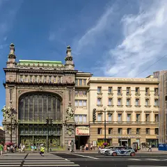

Подборку собрали 9 ноября, прошедшие события скрыты. Свежая афиша — на главной
Афиша · обновлено 9 ноября
Стендап в Петербурге
2 вечера стендапа с 9 ноября по 13 декабря. Билеты — от 390 ₽. Даты и цены сверяем с официальными страницами, ссылки на кассы — в карточках. Позови на стендап игрой или собери компанию голосованием.
- 2 вечера стендапа
- от 390 ₽
Стендап-вечера 2
Commode · м. Маяковская · 390–1 990 ₽ · 18+
У микрофона только девушки-комики из Петербурга и Москвы: про бывших, свидания и всё наболевшее. Идёт почти каждый вечер на Невском — готовый план для девичника.
Подробнее: Стендап по-женскиПозвать сюда: Стендап по-женскиБилеты : Стендап по-женски (страница с билетами, откроется в новой вкладке)
Отель «Москва» · м. Площадь Александра Невского · 1 290–2 990 ₽ · 18+
Сборный концерт: пять хедлайнеров с телешоу и интернет-проектов, один из них ведёт вечер. Зал в отеле у Александро-Невской лавры, поздний старт — формат для компании.
Подробнее: Главный стендапПозвать сюда: Главный стендапБилеты : Главный стендап (страница с билетами, откроется в новой вкладке)
Готовые планы рядом с площадками 6
- Театр музыкальной комедии · Театр · м. Гостиный двор
- 8 минут пешкомМама Тата · Кафе
Мюзикл или оперетта в нарядном зале Театра музыкальной комедии, а потом 8 минут пешком — хачапури и сытные салаты в «Маме Тате».
Открыть план: Мюзикл на Итальянской и домашняя кухняПозвать сюда: Мюзикл на Итальянской и домашняя кухня
Фото: Книжная пыль, CC BY-SA 4.0 · Wikimedia Commons
- Стендап-клуб на Белинского · Стендап-клуб · м. Маяковская
- 1 минута пешкомЧешская пивница · Пивной ресторан
Концерт в небольшом стендап-зале у Литейного, а потом — пражская пивная почти по соседству: разлить и обсудить лучшие шутки.
Открыть план: Стендап и чешская пивницаПозвать сюда: Стендап и чешская пивница
Фото здания: Никонико962, CC BY-SA 4.0 · Wikimedia Commons

- Театр Комедии им. Акимова · Театр · м. Гостиный двор
- 5 минут пешкомKriek на Итальянской · Пивной ресторан
Лёгкий спектакль в доме Елисеевых — хороший первый поход в театр вдвоём, — а потом 5 минут пешком — мидии и бельгийское пиво на Итальянской.
Открыть план: Театр Комедии и бельгийские мидииПозвать сюда: Театр Комедии и бельгийские мидии
Фото: Florstein, CC BY-SA 4.0 · Wikimedia Commons
- Giallo Bistro · Итальянское бистро · м. Площадь Восстания
- 3 минуты пешкомStage StandUp Club · Стендап-клуб
Ужин в камерном бистро у площади Восстания, а через пара минут пешком — первый стендап-клуб города: если разговор не клеится, смех всё исправит.
Открыть план: Итальянский ужин и стендапПозвать сюда: Итальянский ужин и стендап
- Стендап-клуб на Грибоедова · Стендап-клуб · м. Сенная площадь
- 2 минуты пешкомВчера и навсегда · Пиано-бар
Камерный стендап-зал у канала Грибоедова, а через пару минут — пиано-бар с живой музыкой у рояля.
Открыть план: Стендап у канала и пиано-барПозвать сюда: Стендап у канала и пиано-бар
- Синий Пушкин · Бар со стендапом · м. Маяковская
Бар у Литейного, где по вечерам выступают комики и музыканты: концерт, коктейль и поздний ужин без переходов.
Открыть план: Комики, коктейль и поздний ужинПозвать сюда: Комики, коктейль и поздний ужин


Как позвать
- Выбери план, место или событие — в карточке адрес, цены и маршрут в Яндекс Картах.
- Нажми «Позвать сюда» — соберётся приглашение-игра для свидания или голосование для компании.
- Отправь ссылку в любой мессенджер: тебе ответят, а компания отметит, куда и когда может. Бесплатно и без регистрации.